Section 01
Hardware & Systems Required
A — Satellite Constellation
Three satellite types flown in combination across 12 orbital planes at 500–700 km altitude. Each carries onboard AI edge processors for real-time triage before downlink.
1. Electro-Optical (EO) — Visual Imaging
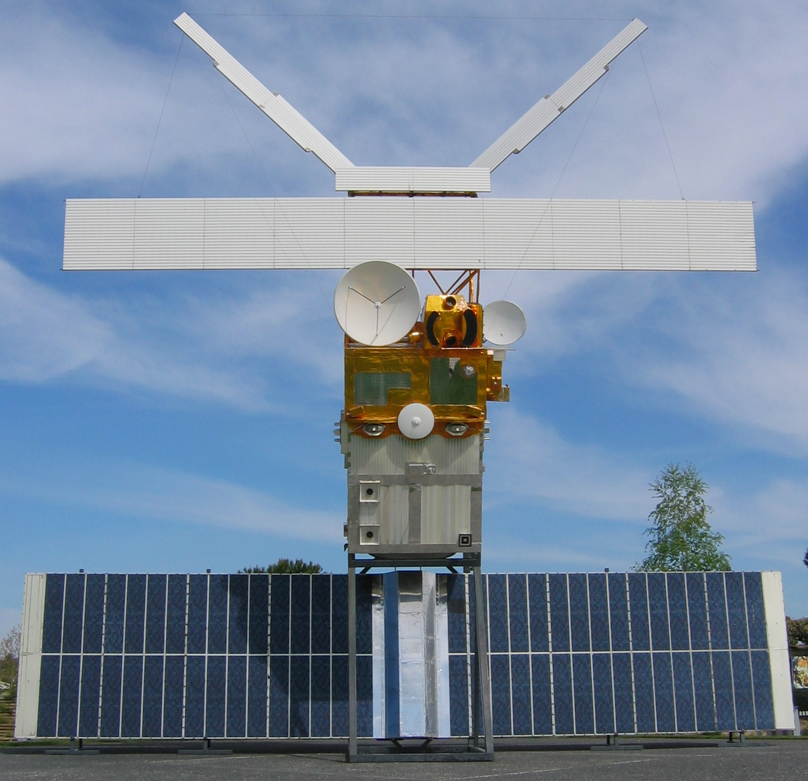
ERS-2 Satellite ESA Earth observation satellite — representative of LEO EO platform design. Carries high-resolution optical camera arrays.
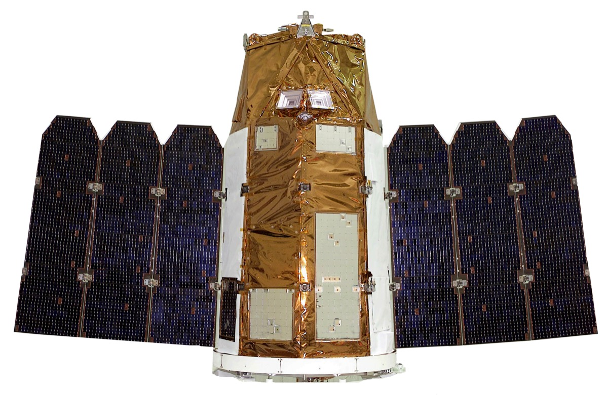
EROS-A Satellite Commercial high-resolution reconnaissance satellite. Comparable sensor class to EO satellites in SENTINEL-AI constellation.
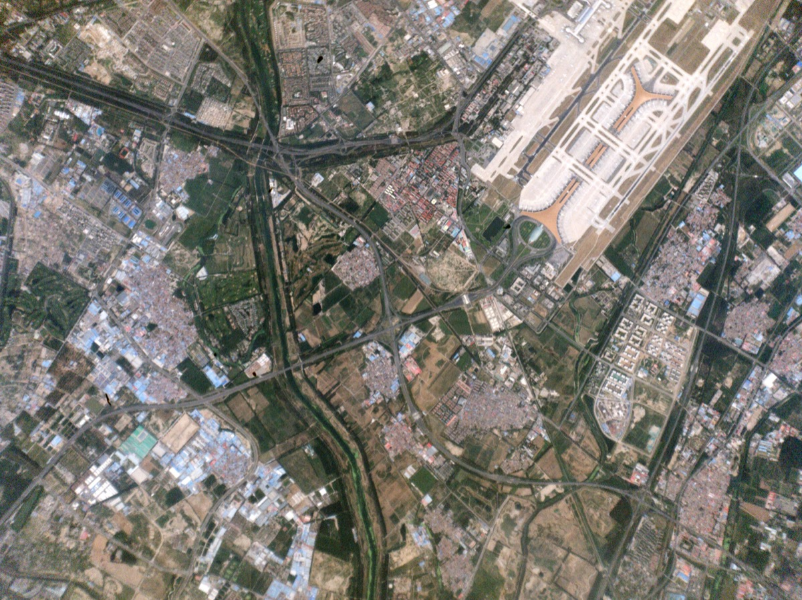
EO Output — Planet Labs Real satellite imagery of Beijing Airport. Demonstrates sub-metre object recognition capability from LEO orbit.
| Spec | Detail |
|---|---|
| Purpose | High-resolution daylight visual imagery, object identification |
| Resolution (GSD) | 0.3m–0.5m per pixel |
| Swath width | 20–30 km per pass |
| Video mode | Up to 30 fps |
| Camera vendors | Airbus Defence, Harris Corporation, Thales Alenia |
| Satellite bus vendors | Airbus, Northrop Grumman, Surrey Satellite Technology |
| Unit cost | $15M–$40M per satellite |
| Quantity needed | Phase 1: 15 | Phase 2: 60 | Phase 3: 150+ |
2. Infrared (IR) / Thermal — Heat & Missile Detection

Rocket Plume — IR Signature The exhaust plume from a rocket launch is detectable by IR sensors within 2–5 seconds of ignition — even through cloud cover.
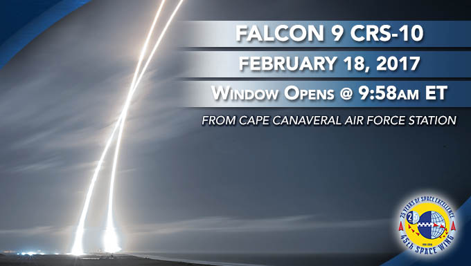
IR Detection Target Missile launches produce a thermal bloom visible to MWIR sensors (3–5 μm band) within seconds — the primary trigger for early warning alerts.
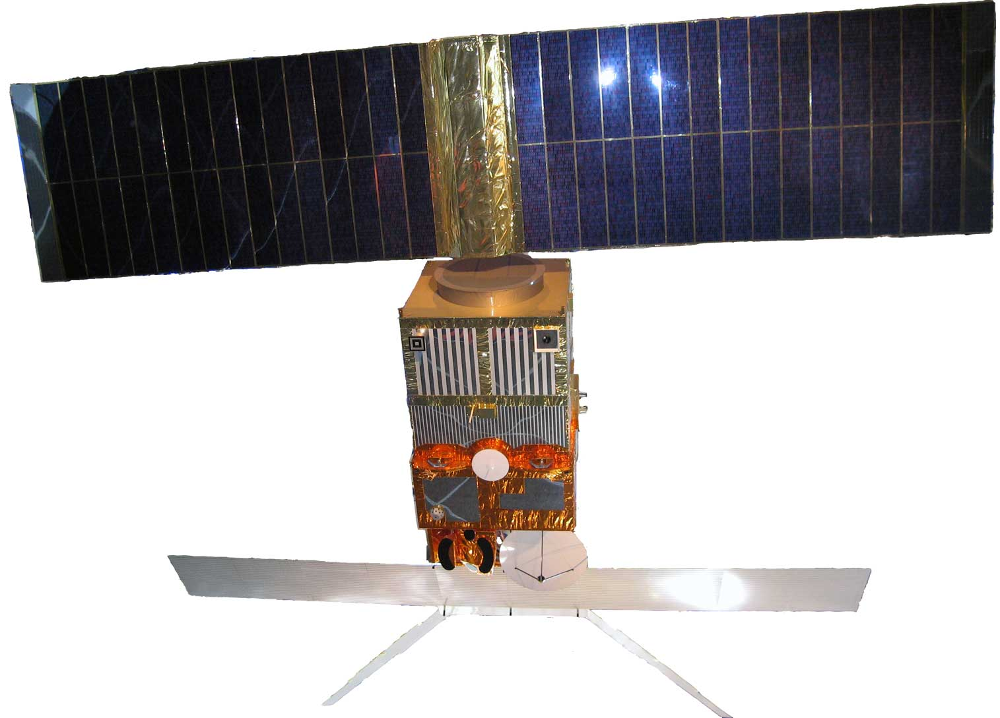
IR Satellite Platform Satellite platform with multi-spectral sensor payload. IR satellites carry MWIR & LWIR detector arrays with cryogenic cooling systems.
| Spec | Detail |
|---|---|
| Purpose | Detect rocket plumes, nuclear detonations, engine exhaust, industrial heat signatures |
| Spectral bands | MWIR 3–5 μm | LWIR 8–12 μm |
| Missile plume detection | Visible within 2–5 seconds of launch ignition |
| Nuclear flash detection | 1–5 seconds post-detonation |
| Sensor vendors | L3Harris, Ball Aerospace, Teledyne FLIR |
| Reference heritage | US SBIRS, DSP satellites (proven programme) |
| Unit cost | $20M–$80M per satellite |
| Quantity needed | Phase 1: 10 | Phase 2: 40 | Phase 3: 100+ |
3. Synthetic Aperture Radar (SAR) — All-Weather Imaging
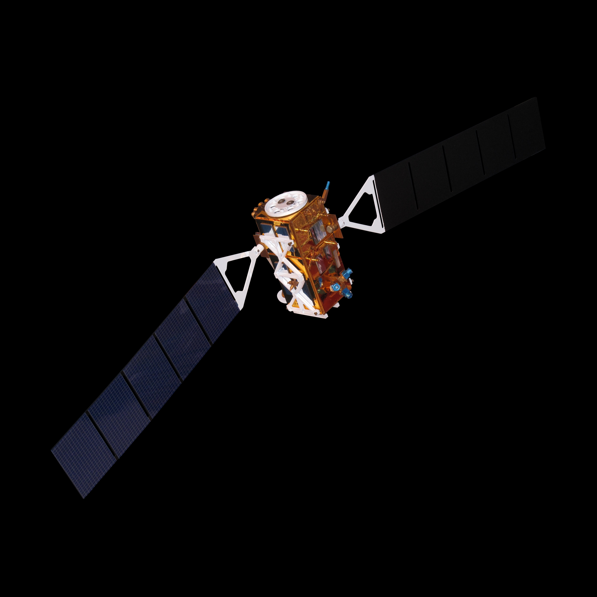
Sentinel-1 SAR Satellite ESA Sentinel-1 at 693 km LEO. SENTINEL-AI SAR satellites use equivalent radar payload technology from MDA Space, Airbus, and Thales.
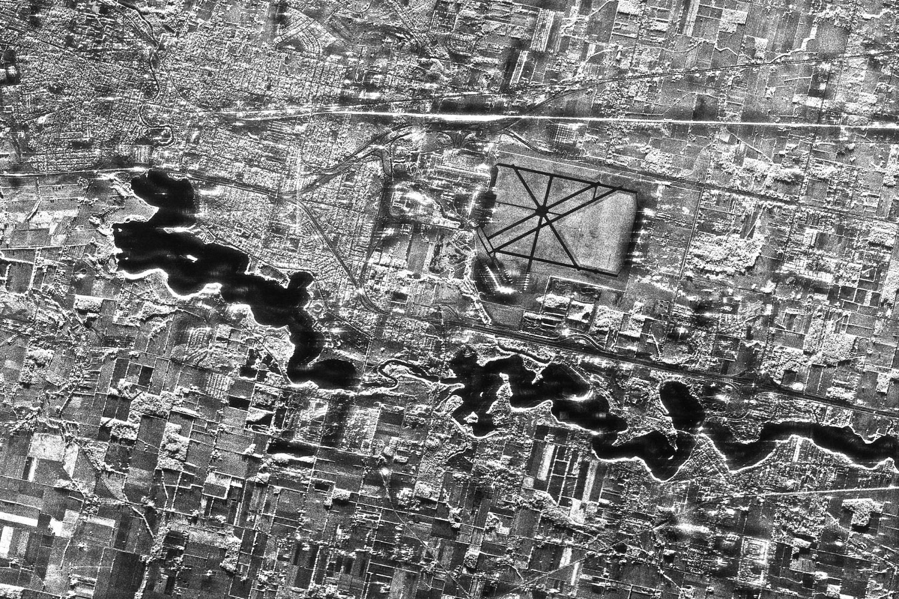
SAR Radar Imagery Output SAR penetrates cloud cover and works in total darkness — detecting vehicles, ships, and military movements regardless of weather.
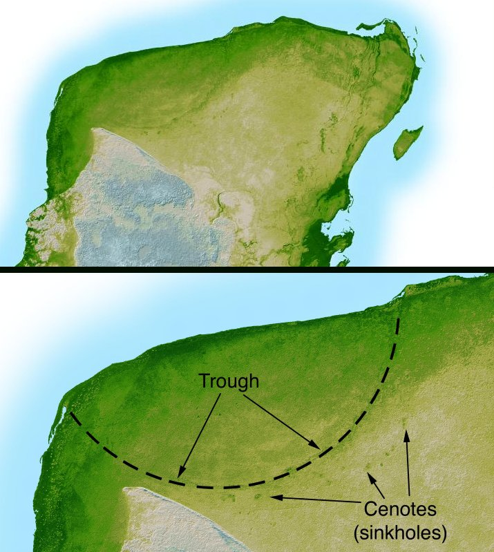
SAR Topographic Mapping Maps terrain, detects underground structures, identifies camouflaged assets invisible to optical sensors.
| Spec | Detail |
|---|---|
| Purpose | Penetrates clouds, works at night, sees through camouflage netting |
| Resolution | 0.25m–1m |
| All-weather | Unaffected by cloud cover or darkness |
| Payload vendors | MDA Space, Airbus, Thales |
| Reference systems | Capella Space, ICEYE, Umbra (commercial) |
| Unit cost | $10M–$30M per satellite |
| Quantity needed | Phase 1: 8 | Phase 2: 35 | Phase 3: 80+ |
4. Onboard AI Processor (fitted on every satellite)
| Spec | Detail |
|---|---|
| Purpose | Edge inference onboard — triage frames, flag threats, reduce downlink load 60–80% |
| Chipset | Radiation-hardened NPU — Ubotica, Spiral Technology, or custom rad-hard ASIC |
| Performance | 10–50 TOPS, real-time at 30fps, model size <50MB |
| Cost per unit | $500K–$2M (included in satellite unit cost) |
5. Inter-Satellite Laser Links (ISL)
| Spec | Detail |
|---|---|
| Purpose | Relay alerts satellite-to-satellite without waiting for ground station contact |
| Technology | Free-space optical laser terminals |
| Vendors | Mynaric, TESAT Spacecom |
| Cost per terminal | $500K–$2M per satellite (added Phase 2 onward) |
Satellite Count Summary
| Phase | EO | IR | SAR | Total | Coverage | Revisit Time |
|---|---|---|---|---|---|---|
| Phase 1 — Regional | 15 | 10 | 8 | ~33 | Europe / Middle East OR Indo-Pacific | 8–15 min |
| Phase 2 — Multi-Regional | 60 | 40 | 35 | ~135 | 3–4 global regions | 3–6 min |
| Phase 3 — Global | 150+ | 100+ | 80+ | 330–500 | Full global persistent | <90 seconds |
B — Ground Station Network
12 globally distributed stations ensure <90 second maximum satellite contact gap. Each station downlinks at 2–10 Gbps and runs local AI processing before forwarding to mission control.
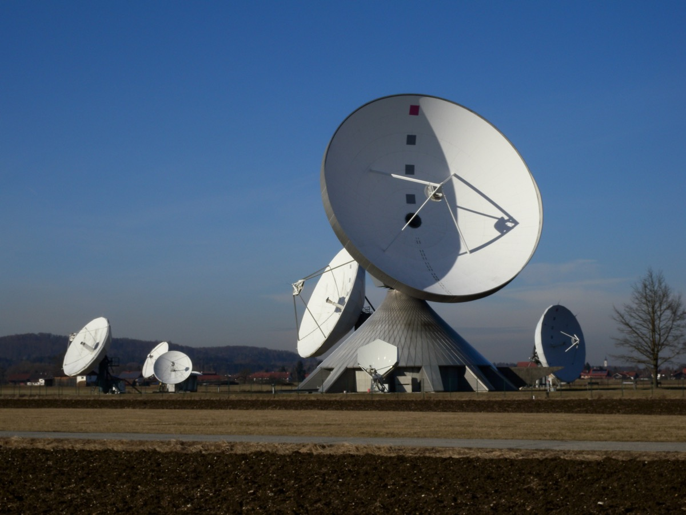
Multi-Antenna Ground Station Array of large parabolic tracking antennas for simultaneous multi-satellite downlink. Each SENTINEL-AI site uses primary 7.3m + backup 3.7m dish configuration.
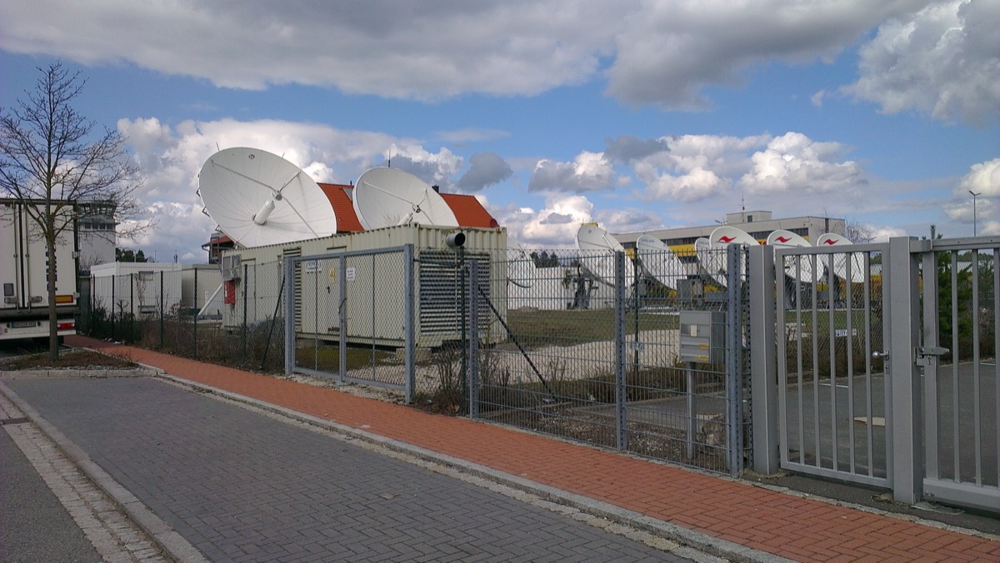
Professional Satellite Earth Station High-throughput commercial ground station with multiple X/Ka-band antennas — representative of the infrastructure deployed at each of the 12 global SENTINEL-AI sites.
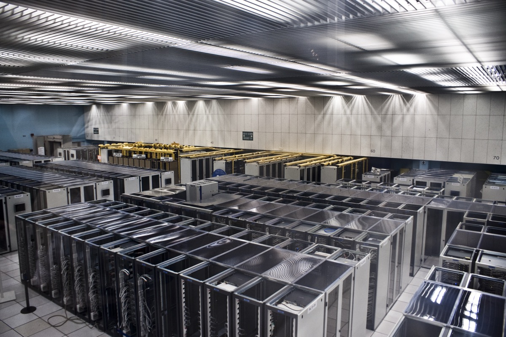
On-Site AI Processing Each ground station houses a GPU cluster (8–32× NVIDIA H100) for real-time AI inference within 5 seconds of downlink, before sending to mission control.
| Equipment | Specification | Cost per Station |
|---|---|---|
| Primary tracking antenna | 7.3m dish, X/Ka dual-band | $2.5M |
| Backup antenna | 3.7m dish | $800K |
| High-throughput modem array | 2–10 Gbps downlink throughput | $500K |
| TT&C system | Full telemetry, tracking & command suite | $1.2M |
| Secure data centre | Tier 3+, 200kW capacity | $3M–$8M |
| GPU cluster (AI processing) | 8–32× NVIDIA H100 per station | $3M–$12M |
| Fibre / MPLS backhaul | Dedicated encrypted line to mission control | $200K–$1M/yr |
| Power + UPS | N+1 redundancy | $500K |
| Physical security | Perimeter, biometric access control | $300K |
| Per station total | $11M–$26M | |
| 12-station network total | $132M–$312M |
12 Global Ground Station Locations
| Location | Region Covered | Role |
|---|---|---|
| Svalbard, Norway | Arctic / Northern Europe | Primary downlink hub |
| Fairbanks, Alaska | North America / Arctic | Primary downlink hub |
| Perth, Australia | Indo-Pacific / Southern Ocean | Primary downlink hub |
| Maspalomas, Spain | Europe / Africa | Primary downlink hub |
| Riyadh, Saudi Arabia | Middle East | Regional hub |
| Singapore | Southeast Asia | Regional hub |
| Nairobi, Kenya | Sub-Saharan Africa | Regional hub |
| Buenos Aires, Argentina | South America | Regional hub |
| Tokyo, Japan | Northeast Asia | Regional hub |
| Dubai, UAE | Middle East / South Asia | Regional hub |
| London, UK | Western Europe | Mission control backup |
| Washington DC, USA | Primary Mission Control | HQ & C2 |
C — Ground-Based Radar Systems
Radar fills the gaps between satellite passes, providing continuous tracking and detection of low-flying threats invisible to optical sensors.
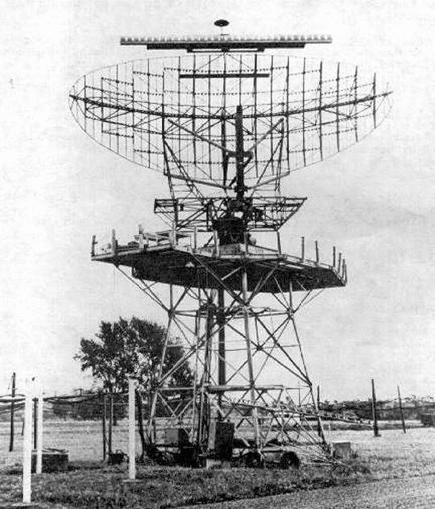
Military Long-Range Radar Large-aperture military radar system. Long-range AESA radars (Raytheon AN/TPY-2 class) track ICBMs, cruise missiles, and aircraft at ranges up to 3,000 km.
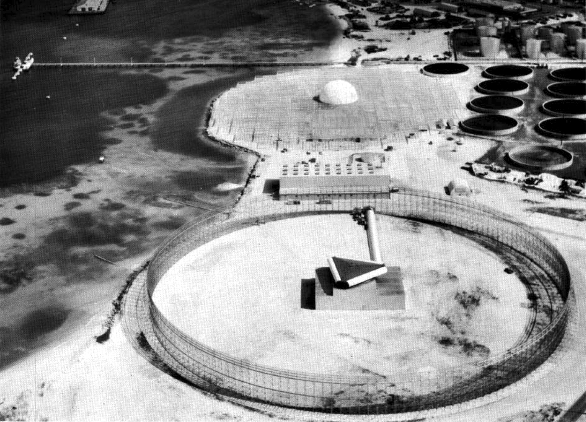
Missile Defense Acquisition Radar Nike Zeus missile defense radar — heritage of modern AESA ballistic missile tracking. Modern equivalents: Raytheon LRDR, AN/TPY-2 (THAAD radar).
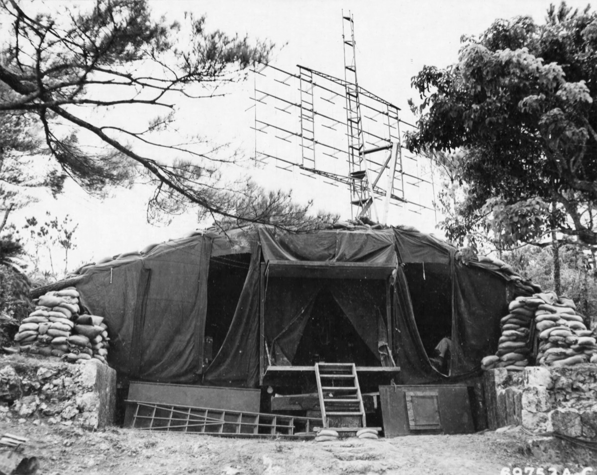
Early Warning Radar Ground-based long-range early warning radar. Modern AESA equivalents (Thales Ground Master 400) detect drones and cruise missiles at 400–800 km range.
| Long-Range Radar | Medium-Range Radar | |
|---|---|---|
| Detection range | 2,000–3,000 km | 400–800 km |
| Primary targets | ICBMs, cruise missiles, aircraft | Drones, low-altitude cruise missiles |
| Technology | AESA (Active Electronically Scanned Array) | AESA / PESA |
| Procurement examples | Raytheon AN/TPY-2, LRDR | Thales Ground Master 400 |
| Unit cost | $200M–$500M | $20M–$60M |
| Quantity recommended | 4 systems | 8 systems |
| Radar layer total | $960M–$2.5B (Phase 3 proprietary build-out) | |
Phase 1 recommendation: License existing national radar data feeds (NORAD, NATO Air Defence) at $5M–$50M/yr rather than building proprietary radar. Own radar deployment from Phase 2 onward.
D — AI & Computing Infrastructure
Mission Control GPU Cluster High-density server racks housing NVIDIA H100 GPUs for real-time AI inference, multi-sensor fusion, and threat scoring. 500–2,000 GPUs at mission control hub.
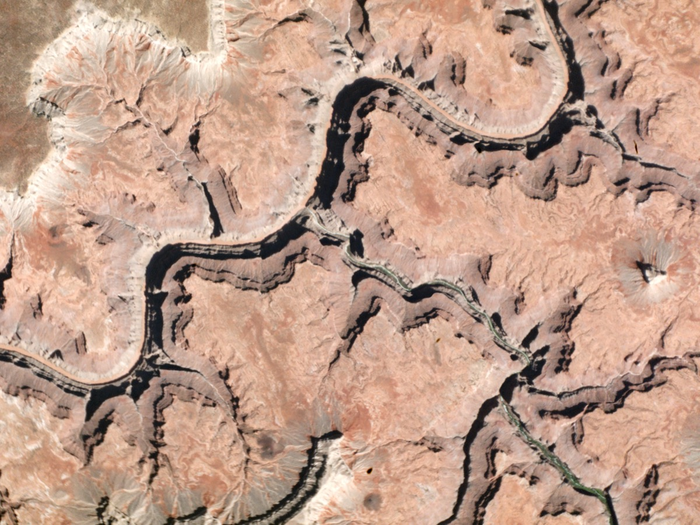
AI Output — Object Recognition Sub-metre satellite imagery fed into AI pipeline. The AI identifies vehicles, structures, and terrain changes at >90–97% confidence per object class.
| Component | Specification | Cost |
|---|---|---|
| Mission control GPU cluster | 500–2,000× NVIDIA H100 (or B200 class) | $150M–$600M |
| Ground station GPU clusters | 8–32× H100 per site × 12 sites | $36M–$144M |
| AI software development | Object detection, tracking, fusion, trajectory modelling | $40M–$80M |
| Training data & labelling | 10M+ annotated frames, 100M+ radar tracks | $20M–$40M |
| Cybersecurity stack | AES-256, HSMs, zero-trust architecture | $15M–$30M |
| AI infrastructure total | $261M–$894M |
E — Launch Services
SpaceX Falcon 9 Primary launch vehicle. Rideshare missions deploy 5–15 satellites per launch at $4M–$7M per launch. Proven reliability with 200+ consecutive successful missions.
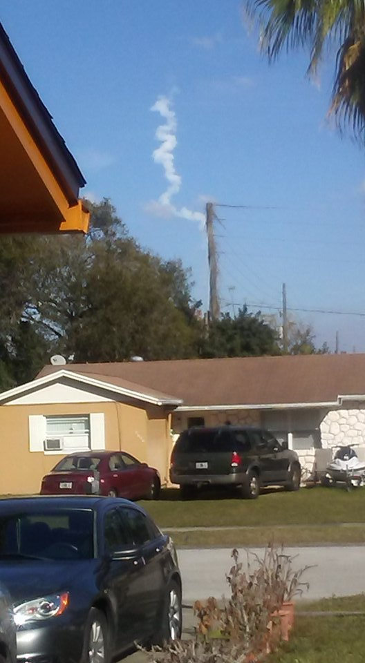
Heavy-Lift Launch Capability For larger satellite batches, Falcon Heavy and Ariane 6 carry 15–30 satellites per launch. Reduces per-satellite launch cost at scale.
Dedicated Launch Option Dedicated small launchers (RocketLab Electron, Arianespace Vega) for 1–3 satellites requiring specific orbital insertion. Used for high-priority or replacement satellites.
| Launch Vehicle | Satellites per Launch | Cost per Launch |
|---|---|---|
| SpaceX Falcon 9 (rideshare) | 5–15 small/medium sats | $4M–$7M |
| SpaceX Falcon Heavy | 15–30 sats | $10M–$15M |
| Arianespace Vega-C / Ariane 6 | 5–20 sats | $5M–$20M |
| RocketLab Electron | 1–3 sats (dedicated) | $7M–$10M |
| Total launch cost (full programme) | ~$900M |